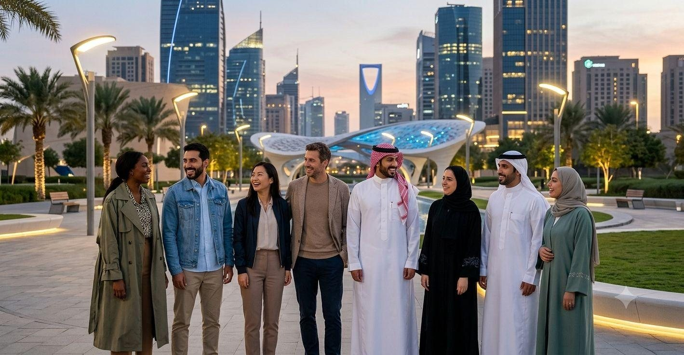
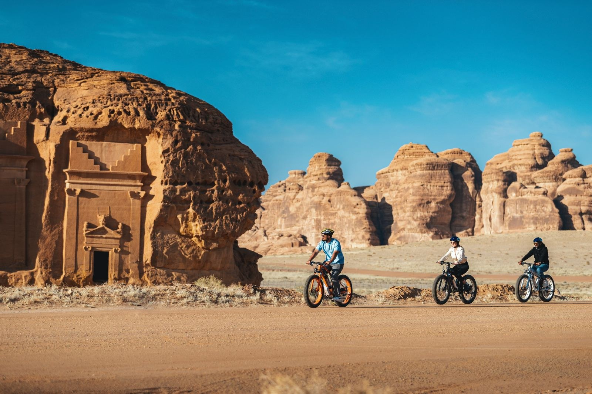
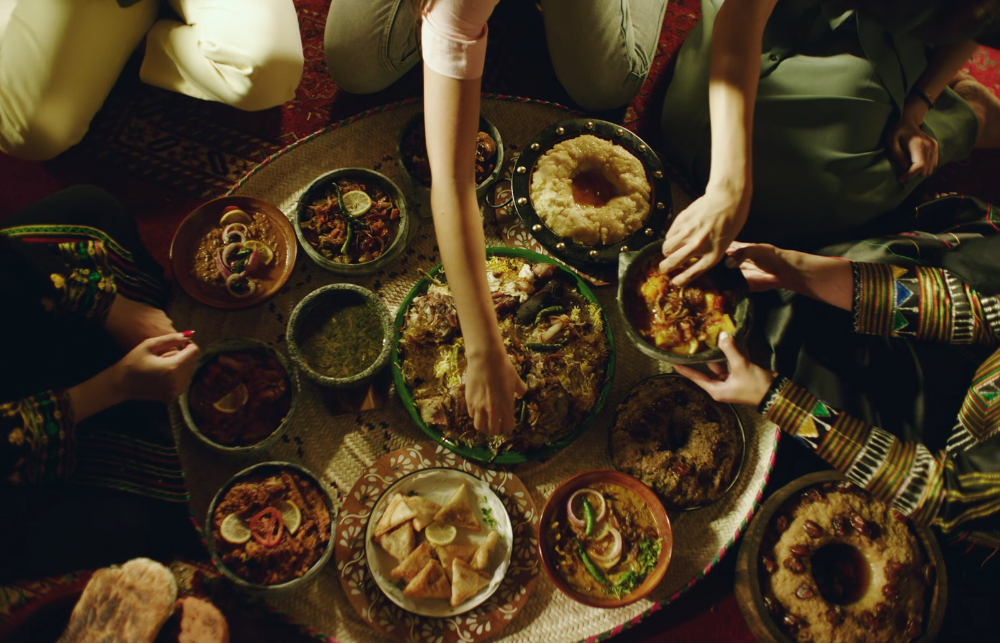
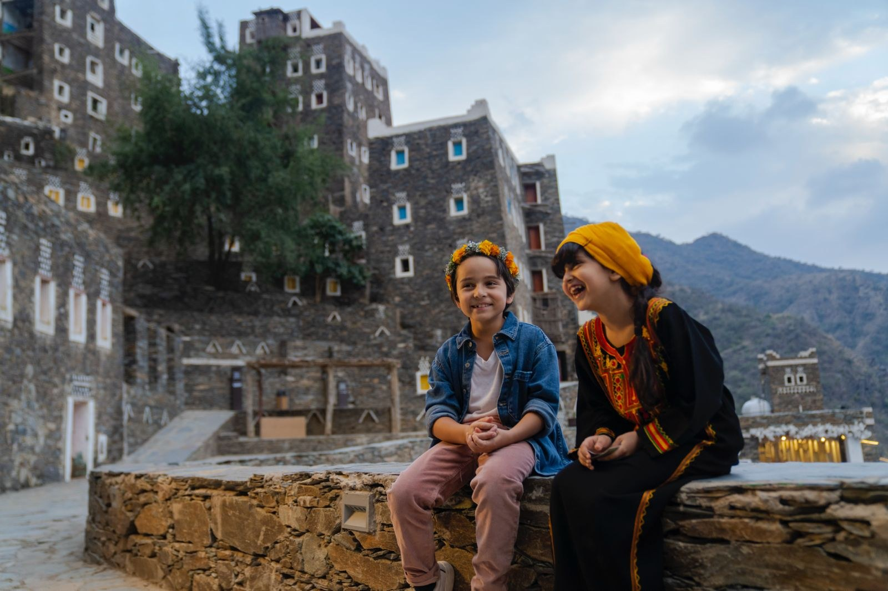
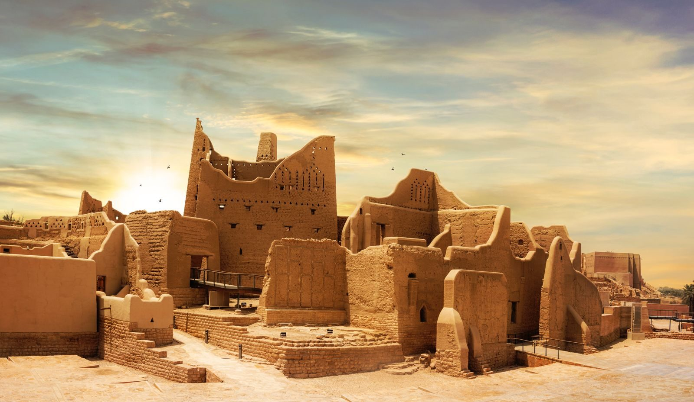
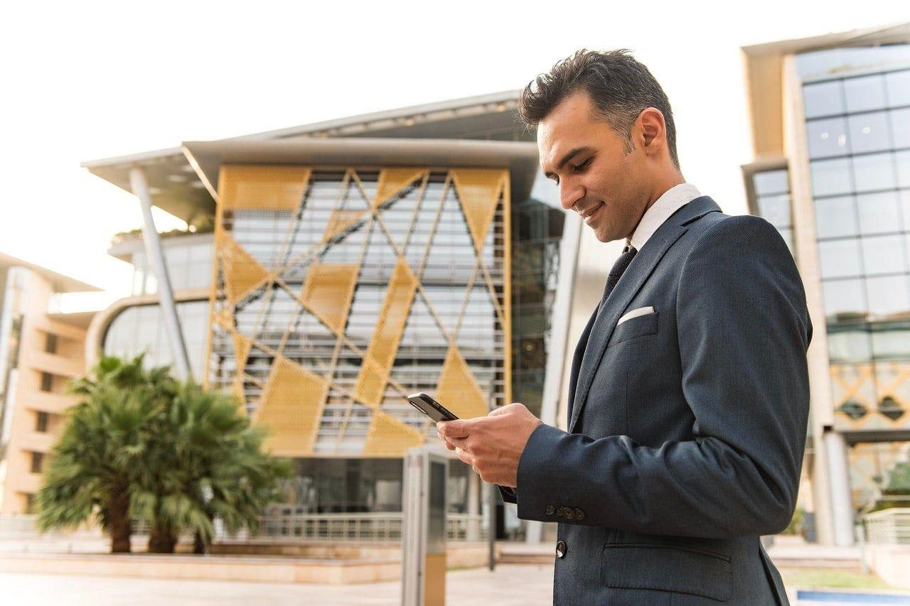
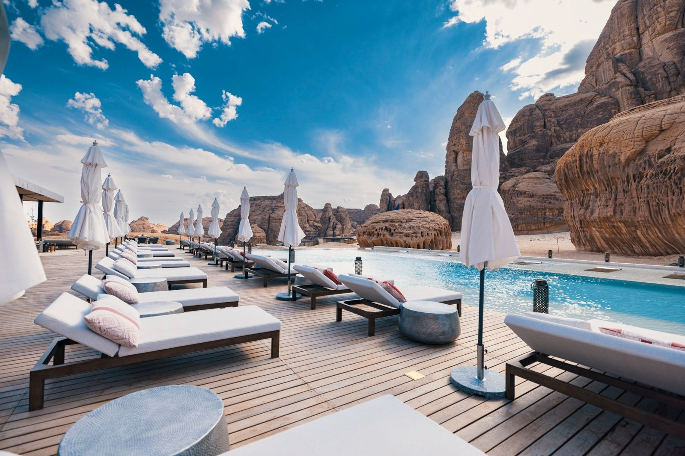

منصة إعلامية رقمية فريدة ومتعددة اللغات، تنقل تفاصيل الحياة اليومية والفرص والتحولات الإيجابية في المملكة العربية السعودية بعيون المقيمين والزوار. ندعوك لاستكشاف قصص حقيقية، تجارب ملهمة، ومقاطع مرئية وصوتية تبني جسوراً متينة من التفاهم الإنساني والثقافي. A premium, multilingual digital media platform capturing the rich tapestry of life in the Kingdom. Experience true stories, immersive videos, and podcasts curated by international residents and visitors. Witness cultural exchange, shared human connections, and the breathtaking transformation of Saudi Arabia.
اكتشف تفاصيل الحياة الحقيقية والفرص الكبرى في المملكة. سواء كنت تخطط للاستقرار، الدراسة، الاستثمار، أو تبحث فقط عن شغف السفر والمغامرة، نضع بين يديك أرشيفاً غنياً يربط عالمك بقلب المجتمع السعودي. Dive deep into authentic daily lives. Whether you are moving for work, studying, investing, or seeking unforgettable adventures, access a vast archive of human-centric media that connects your world to ours.
أن نكون المنصة المرجعية والرقمية الأولى للتجارب الإنسانية التفاعلية الصادقة، لنقل تفاصيل وثراء الثقافة والمعيشة في المملكة العربية السعودية بكل مصداقية ومحبة إلى مختلف شعوب العالم. To be the premier global digital destination for authentic human experiences, bridging cultures and reflecting daily life in Saudi Arabia through the eyes of its diverse community.
بناء وتعميق الفهم والتقارب الثقافي والتعايش السلمي عبر إنتاج وإتاحة محتوى رقمي تفاعلي، وموثوق، ومتعدد اللغات يسلط الضوء على الفرص، والتطور الحضاري، والترابط الأسري والمجتمعي. Constructing cross-cultural understanding by producing and curating high-quality, multilingual media that truthfully highlights Saudi Arabia’s societal harmony, opportunities, and transformation.

تراث وتاريخHeritageتصف إيلينا روستوفا (عالمة جيولوجيا ألمانية) دهشتها العميقة من جمال مقبرة لحيان بن كوزا في العلا، وتجربتها الساحرة في الجلوس تحت النخيل واحتساء القهوة السعودية بالهيل. Elena Rostova, a German geologist, describes her awe standing in front of Hegra's magnificent tombs and enjoying coffee in the oasis.
اقرأ القصة كاملة...Read full story...
طهي وضيافةCulinary & Hospitalityيروي الشيف ماركوس فانس من شيكاغو تجربته المؤثرة في مطبخ عائلي بالرياض، حيث تعلم إعداد الكبسة والجريش على أيدي أم فهد السعودية. Chef Marcus Vance shares his heartwarming Najdi kitchen feast, learning traditional Kabsa with local grandmother Um Fahad.
اقرأ القصة كاملة...Read full story...
طبيعة ومغامرةNature & Ecoتشارك سارة جينكينز من لندن تجربتها في صعود جبال السودة ومسارات عسير الطبيعية واستكشاف قرية رجال ألمع الملونة والساحرة. Sarah Jenkins from London hikes up the misty heights of Jabal Sawda and explores the colorful gingerbread village of Rijal Almaa.
اقرأ القصة كاملة...Read full story...
سياحة وفعالياتRiyadh Seasonتنقل الزائرة كلير مارتن حكايتها الرائعة بين عروض البوليفارد والمناطق الترفيهية الفخمة التي تضاهي أكبر المدن الترفيهية في العالم. Claire Martin details the dynamic and highly modern recreational experiences at Boulevard Riyadh City and global zones.
اقرأ القصة كاملة...Read full story...
أعمال واستثمارInvestmentيقدم روبرت قصة حقيقية مليئة بالنصائح حول سهولة تأسيس شركته في الرياض وتواصله البناء مع الهيئة العامة للاستثمار لتسريع نمو أعماله. Robert reviews his entrepreneurial journey registering his business smoothly under Saudi's foreign investment initiative.
اقرأ القصة كاملة...Read full story...
رؤية وتأملReflectionقصة إنسانية دافئة من باحثة أمريكية عاصرت التحولات الحضارية الفائقة، والتعايش السلمي، والكرم الأسطوري للسكان المحليين بالشرق الأوسط. An inspiring perspective by an American scholar experiencing firsthand modern transformation and cultural dialogue.
اقرأ القصة كاملة...Read full story...محادثة مع د. صامويل تشن، مدير الابتكار والتقنية الحيوية السنغافوري بالرياض، لمناقشة ثقافة العمل الرقمية والمواءمة مع الأهداف الوطنية ومؤتمر LEAP. Dr. Samuel Chen, biotechnology director, shares tips on adapting to the Kingdom's business transformation and LEAP innovations.
تشارك عالمة الأنثروبولوجيا النيوزيلندية هانا رينولدز قصة انتقالها لجدة، وتأثير مفهوم المجلس في الجيرة وبناء جسور الصداقة والمحبة. Hannah Reynolds discusses moving to Jeddah, learning local cultural etiquette, and finding deep community bonds.
Four ready-made practical guides — tap any card to view the full guide at a clear, readable size.
لا توجد أدلة مضافة بعد.No guides added yet.
نخبة من المقيمين والخبراء من جنسيات مختلفة، كرسوا تجربتهم الطويلة لمساعدتك في الاستقرار والنجاح. اختر السفير المناسب واطرح سؤالك للحصول على إرشادات مجربة وموثوقة فوراً. A selected group of expat leaders who dedicated their journeys to help you settle and succeed. Choose an ambassador and ask your questions for direct, verified insights.
دليلك البريطاني لفهم تفاصيل العيش والاندماج في المجتمع السعودي بكل عفوية وبساطة. Your British guide to daily life and effortless integration into Saudi society.
صوت الخبرة الأمريكية العميقة الذي يجيب الأجانب عن سر التعلق بالسعودية وثقافتها. A voice of deep American experience answering why expats fall in love with Saudi culture.
مرجعك الصيني الموثوق لاستكشاف التناغم الثقافي والفرص الواعدة في المملكة من منظور شرقي. Your trusted Chinese reference for cultural harmony and promising opportunities, from an Eastern lens.
ابن المملكة وجسرها الإفريقي، يجيب الأجانب بروح مرحة عن تفاصيل اليوميات والتجارب الحية. A son of the Kingdom and its African bridge, answering daily-life questions with a cheerful spirit.
سفير متصل حالياً مستعد لمشاركتك الإجابات
أهلاً بك! أنا جون من لندن، عشت في السعودية سنوات كافية لأتعلم تفاصيل الحياة اليومية بكل بساطة. يسعدني الإجابة عن أي سؤال يخص الاستقرار، التنقل، والاندماج اليومي في المجتمع السعودي.
سواء كنت زائراً، أو طالباً، أو مستثمراً، أو مقيماً منذ سنوات، يسعدنا جداً أن تشاركنا صورتك أو مقالك أو تجربتك لتنشر بالمنصة وتصل إلى العالم بالعديد من اللغات الرسمية المعتمدة. Share your personal stories, photos, or videos of life, travel, or work in Saudi Arabia. Our editorial team reviews every submission to be featured on our global media platform.
بواسطة: د. إيلينا روستوفا (ألمانيا)
تاريخ النشر: ٢٠٢٦/٠٣/١٥
شكراً لتفاعلك وتواصلك معنا في المنصة.
لا توجد منشورات اجتماعية مضافة بعد. تابعنا قريباً!No social posts yet. Check back soon!